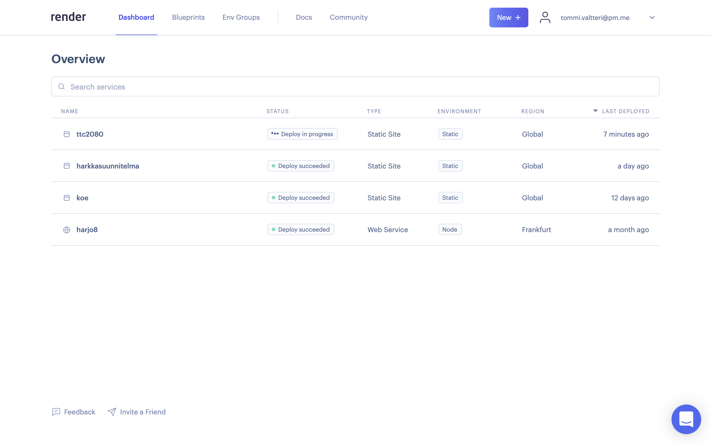
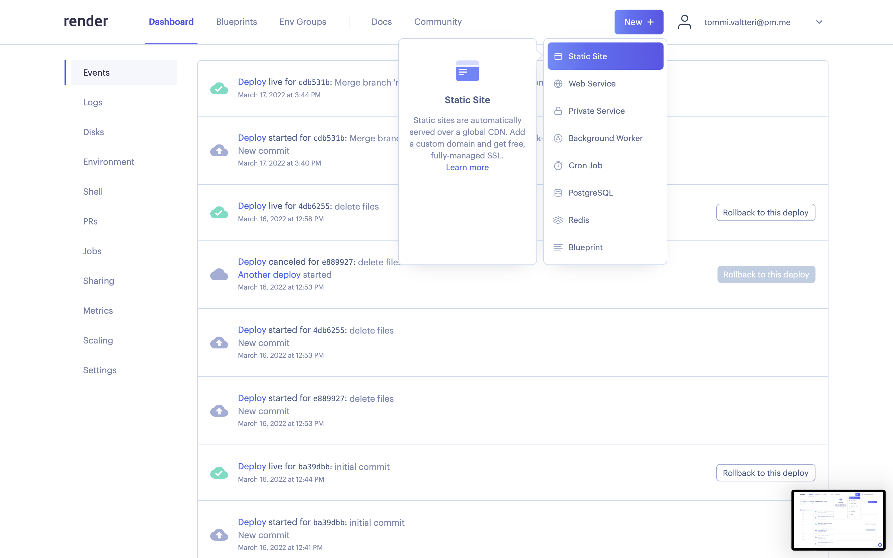
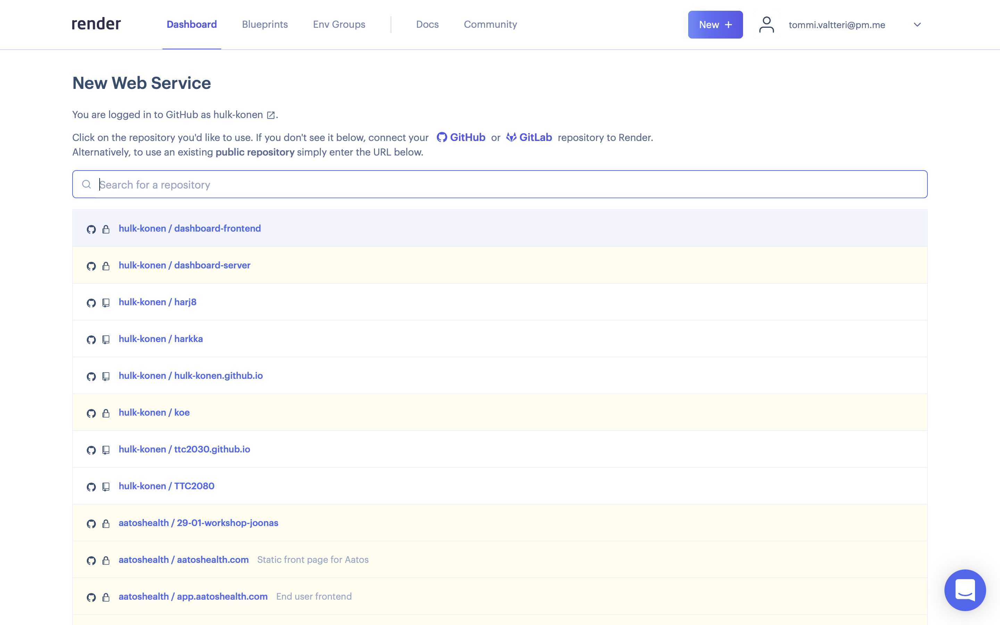
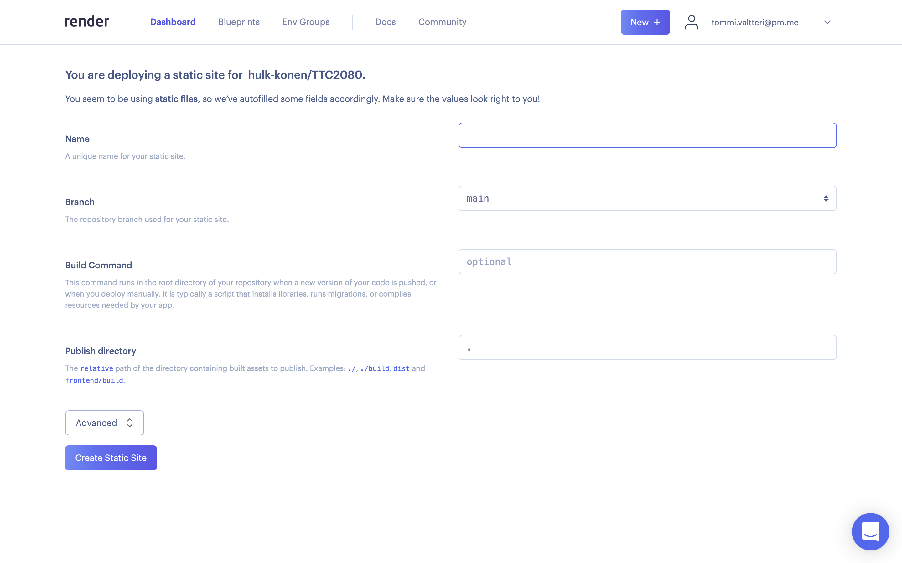
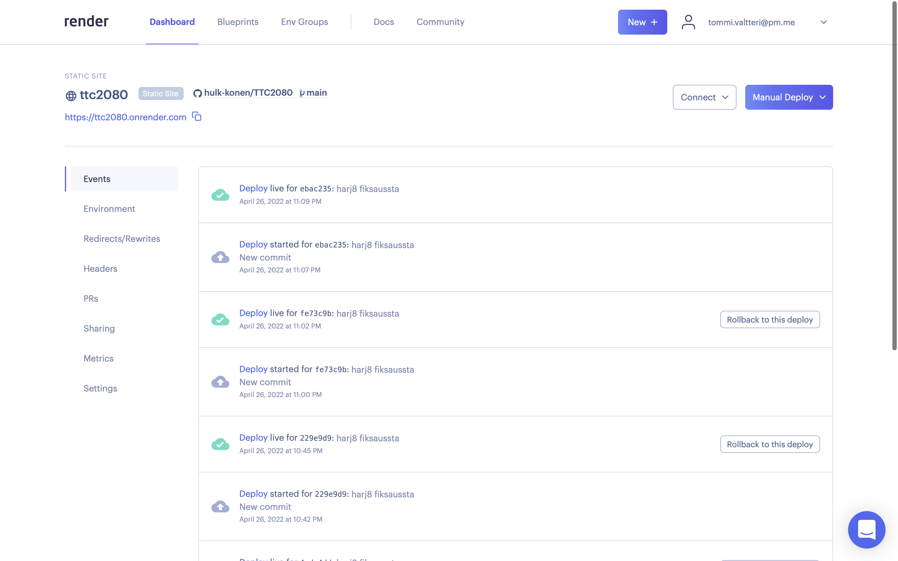
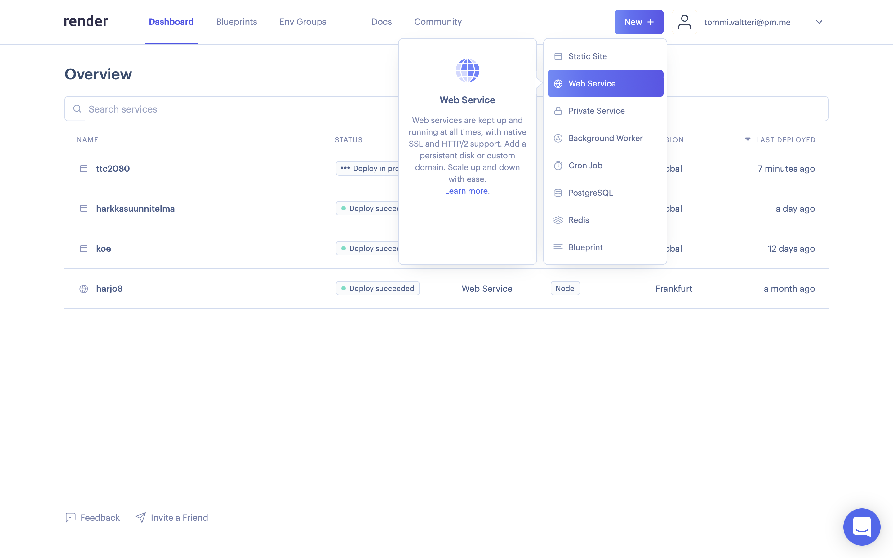
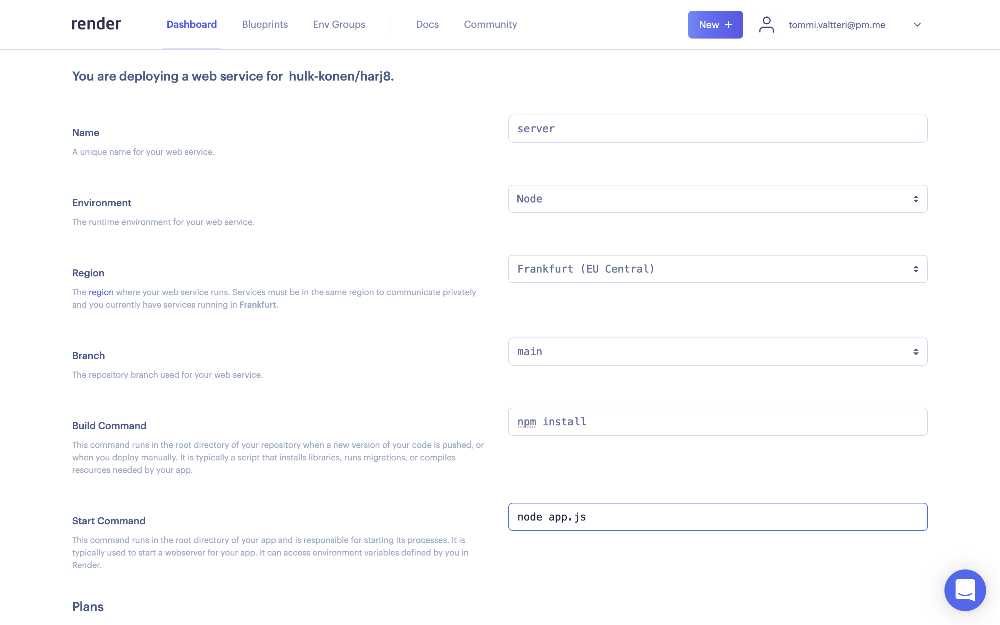
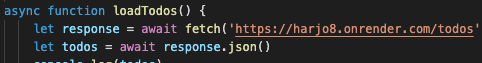
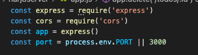
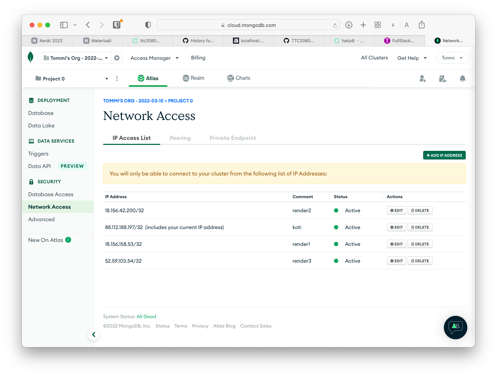

Päädyin käyttämään render.com palvelua, koska olin tehnyt sinne ja aiemmin tunnukset ja hieman kikkaillut.
Frontend
Render aloitusnäkymä. Tähän mennessä on rekisteröity tili ja yhdistetty github. Niissä ei mitään erikoista. Uusi projekti lähtee New + painikkeella. HTML + CSS + JavaScript frontendiin riittää Static Site palvelu.Valitaan github repo josta koodi tulee.Asetuksiin riittää projektin nimi.Suurimmaksi osaksi render deployaa githubiin pushatun koodin automaattisesti. Välillä manual deploy herättää sen. Sivusto löytyy ylhäällä olevan linkin takaa, johon sitten lisätään tiedosto rakenne.
Backend
Backend käyttää nodea, joten se vaatii Web Servicen.
(Valitaan repo kuten äsken)
Asetuksiin npm install ja node app.js. Näiden tajuamiseen meni liian kauan.
(Deployaus tapahtuu kuten äsken. Serverin osoite löytyy samasta paikasta.)
Koodipuoli
Frontendin puolelle riitti osoitteiden vaihtaminen.Oikea portti backendin puolella.MongoDB:n puolelle piti vielä avata yhteys renderin ip:osoitteille.
{kind=link}
{kind=link}